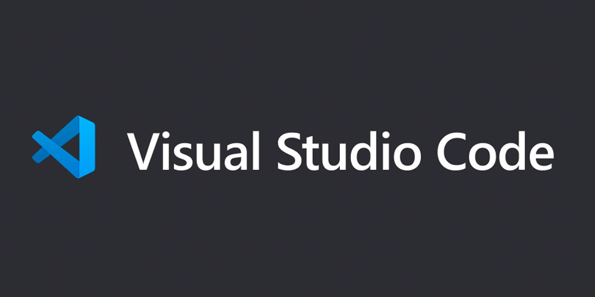

To set up Visual studio code we first have yo install visual studio code and after that a set up window for Vsc will appear. You will have to read and aggree on their policies after that you have to save it on your desktop and you can easly use VSC.
To open console you will have to right click in the screen the click on inspect then a small section will appear showing options above and there you have to choose CONSOLE.
